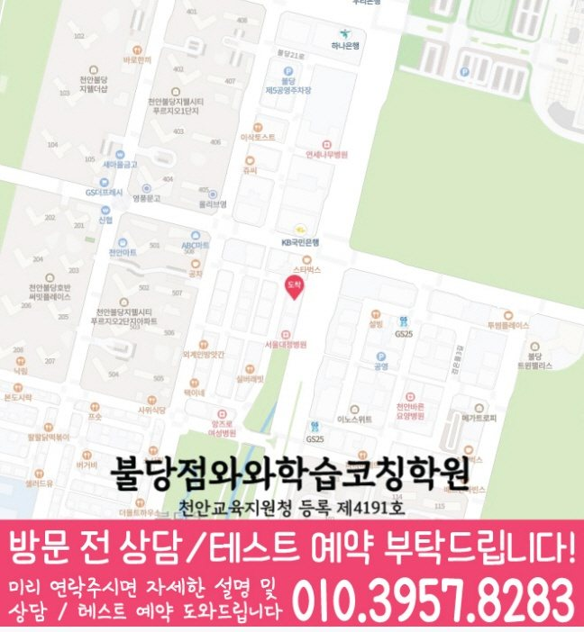

학생이 바로 적용할 공부 방법
막히는 부분을 골라 실행 방법과 기록 양식을 살펴보세요.
불당동에서 안내하는 지점은 와와학습코칭센터 불당점입니다.
자료에 기재된 안내 학년: 국어 중1~중3 · 영어 중1~중3 · 수학 중1~중3
실제 방문 주소: 충남 천안시 서북구 불당33길 22 고은타워 805호
불당점 수업 조건·교육비·공간 사진 확인
불당점 선생님 소개에는 「표와 그림 정리」 · 「단계별 시간 살피기」 · 「자료 정돈하기」 같은 지도 방향이 담겨 있습니다. 최근 풀이·복습 기록에서 필요한 도움을 골라 질문을 준비해 보세요. 실제 담당 과목과 수업 배정은 상담에서 확인하세요.
수업 안내 이미지

이미지를 누르면 원본 크기로 확대해 작은 글씨를 읽을 수 있습니다. 공통 수업 안내이며, 실제 과목·학년·시간은 지점 정보와 함께 확인해 주세요.
지점·과목 안내
불당동에서 수업을 알아보는 학생에게 안내하는 지점은 와와학습코칭센터 불당점입니다. 지점 위치와 과목별 학년을 먼저 확인해 주세요.
제공 자료에 기재된 학년입니다. 현재 개설 과정·수업 시간·반 편성은 상담에서 확인해 주세요. 안내가 없는 학년은 수업 가능 여부가 확인되지 않았습니다.
와와학습코칭센터 불당점
충남 천안시 서북구 불당33길 22 고은타워 805호
주소로 네이버 지도 검색교육지원청 등록번호: 천안교육지원청 등록 제4191호
주변 학교 참고: 천안불당중학교 · 천안불무중학교 · 천안월봉중학교. 재학생 수강 여부나 학교별 반 편성을 뜻하지 않습니다.
센터 위치 안내

와와학습코칭센터 불당점 주소: 충남 천안시 서북구 불당33길 22 고은타워 805호
지도를 누르면 원본 크기로 확대할 수 있습니다. 네이버 지도에서 주소와 이동 경로 확인 · 상담 대표전화 010-6839-8283
학습 상담 준비
불당점의 중등 과정은 과목마다 안내 학년이 다릅니다. 학생의 학년과 필요한 과목을 함께 전달해 주세요.
함께 의논할 주제 학교 진도와 복습·주간 계획의 실행
교과서·부교재와 최근 시험지, 수행평가 일정을 준비해 주세요. 과목마다 어려운 단원과 감점 이유를 나누면 복습 순서를 정하는 데 도움이 됩니다.
학원 과제와 학교 과제가 겹치는 날을 표시하고, 실제로 끝낼 수 있는 양을 적어 보세요. 오답을 다시 풀 시점과 진도를 조정할 기준을 상담에서 확인해 주세요.
학교와 일정
지역 참고 학교이며, 재원 여부나 학교별 반 운영을 뜻하지 않습니다. 재학 중인 학교의 교재·시험 범위·하교 시간을 기준으로 상담해 주세요.
자주 묻는 질문
자료에 기재된 학년은 국어 중1~중3, 영어 중1~중3, 수학 중1~중3입니다. 과학 · 사회의 해당 학년 정보는 기재되어 있지 않아 수강 가능 여부를 상담으로 확인해야 합니다. 현재 개설 과정과 수업 시간은 지점 상담에서 확인해 주세요.
센터별 교습비 자료에서 안내 금액을 확인할 수 있습니다. 희망 과목·학년을 알려 주고 현재 과정의 교습비, 교재비 등 추가 비용, 수업 요일과 시간을 확인해 주세요.
학생이 푼 문제와 실제 공부량을 어떻게 확인하는지, 오답을 언제 다시 보는지, 계획한 양을 끝내기 어려울 때 어떻게 조정하는지 물어보세요. 점검 주기와 학부모 안내 방식도 함께 확인해 주세요.
안내받은 수강 과목·학년, 수업 요일·시간, 교습비와 추가 비용을 함께 적어 두세요. 학생이 시작할 학습 범위와 과제량, 다음에 학습 상태를 확인할 시점도 정리하면 계획을 이어 가기 좋습니다.
함께 읽으면 도움이 되는 자료
중등 공부에서 어려운 부분과 다음 준비를 함께 살펴보세요.
막히는 부분을 골라 실행 방법과 기록 양식을 살펴보세요.
학생이 실제로 해 본 결과를 보고 교재의 역할을 정해 보세요.
학생의 공부 기록을 바탕으로 수업과 다음 목표를 비교해 보세요.
학생의 공부와 교재 선택을 돕는 참고 자료입니다. 지점의 개설 과목·학년과 실제 사용 교재는 별도로 확인해 주세요.
공용 학습 공간 예시 사진입니다. 불당점의 실제 공간을 촬영한 사진은 아니며, 해당 지점의 현재 공간은 방문 상담에서 확인해 주세요.